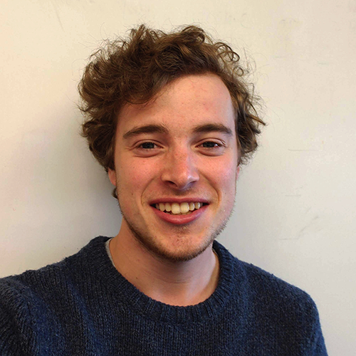

I'm a motivated and hardworking individual, with a passion for helping others. I achieve my goals through perseverance, commitment, and responsibility. I get results by being a strong team member, learning by experience. and dedication in all roles. I volunteer on a global and local scale, and have been recognized as an outstanding member of the community.
Volunteer Experience
Design Manager, HOBY World Leadership Congress
Feb—July 2018, 2019
- Coordinate with the Marketing and Publicity team to establish and maintain brand management
- Research and reinforce the needs of the organization, build an identity based on the tone and values of the event program
- Learned time management, and how to schedule deliverables
Co-Director of Junior Staff, HOBY Western Ontario
Sept 2017—present
- Oversee the construction of the staff team alongside the seminar chair
- Coordinate meetings and training modules with the staff members, ensure everyone receives the proper guidance for their position
- Respond to staff questions and comments, manage schedule requests
Campus Ambassador, University of Waterloo Stratford Campus
Sept 2017—present
- Network with a variety of students, and encourage them to study at the University of Waterloo
- Assist in digital media events, lead workshops for high-school students
Work Experience
Server, Crossroads Board Game Café
Oct 2018—present
Sales Associate, Virgin Mobile
Feb 2018—May 2018
- Guide customers through plans and packages offered
- Endorse/up-sell promotions based around their needs and usage
- Customer service, responding to questions and concerns
Education
Degree in Global Business and Digital Arts
University of Waterloo, expected graduation in 2021
Certificate in Media Fundamentals, with High Honours & 3.96 GPA
Sheridan College, June 2016
Ontario Scholar, Arts & Media SHSM
South Huron District High School, June 2014
References
| Varun Mehrotra | Karla Kerrigan | Shauna McKinley |
| Vice Chair, Marketing & Publicity, HOBY WLC |
Seminar Chair, HOBY Western Ontario |
Manager, Virgin Mobile |